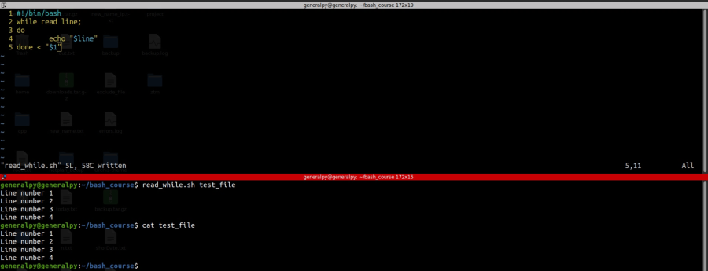

We can manipulate the fact that while loop also accepts arguments to use read command with while and take files as input and read them line by line.
Syntax :
while read var
do
#commands
done < file
Here read will return 0 if it successfully accepts input else retunrs non zero number hence running the while loop. In the end after done, we redirect the stdin to a file. One common mistake is to redirect stdin of read command instead of while loop. This is wrong as it will only read first line of file and will cause an infinite loop.

We can also redirect output of any command(or process to be precise) to stdin using something known as process substitution. Process substitution is a method thru which we can change process to a file.
Sytax of process substitution is :
<(command/process)
This will point the output to a file created in dev directory usually.
This method can help us to read thru command output using read while loops, just replace the file with process substituion.